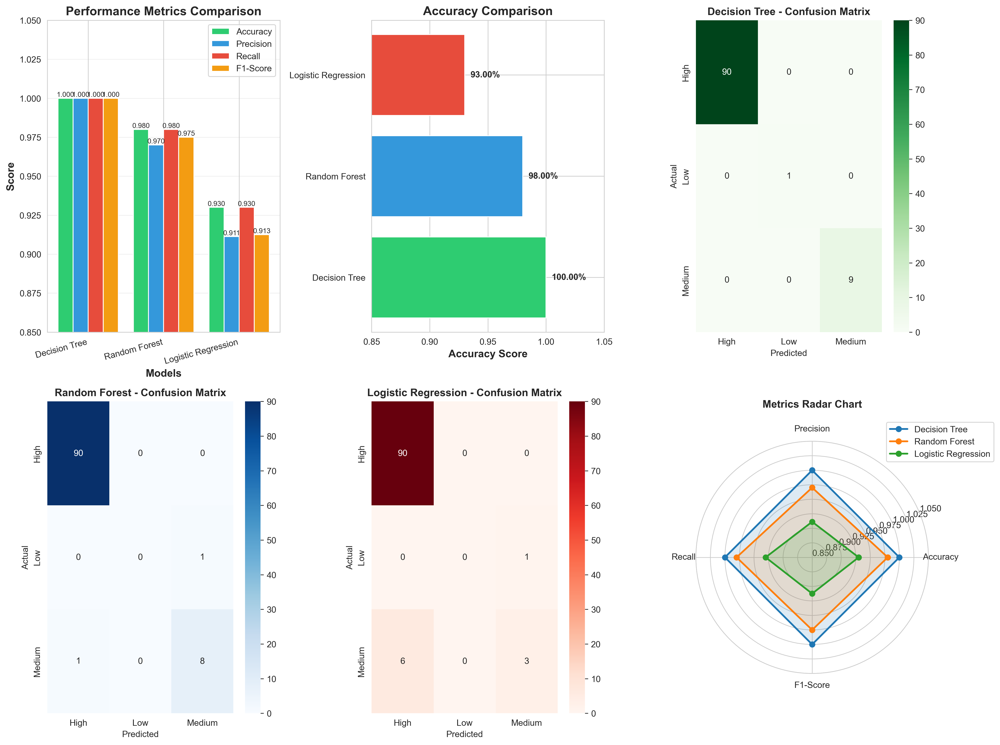

Performance Summary
| Model | Accuracy | Precision | Recall | F1-Score |
|---|---|---|---|---|
| Decision Tree | 100.00% | 1.0000 | 1.0000 | 1.0000 |
| Random Forest | 98.00% | 0.9701 | 0.9800 | 0.9750 |
| Logistic Regression | 93.00% | 0.9113 | 0.9300 | 0.9125 |
Visual Comparison

🏆 Winner: Decision Tree
Achieved perfect 100% accuracy on test data with excellent interpretability.
Best Accuracy
Perfect Precision
🌲 Random Forest
Strong performance at 98% accuracy. More robust for production environments.
98% Accurate
Ensemble Method
📈 Logistic Regression
Good baseline at 93% accuracy. Fast and simple linear model.
93% Accurate
Linear Model
Key Insights
- Decision Tree performs exceptionally well with this maternal health dataset
- Random Forest offers excellent balance between accuracy and robustness
- Logistic Regression struggles with non-linear patterns in the data
- All models show strong performance (>90% accuracy)
- Decision Tree selected as the production model